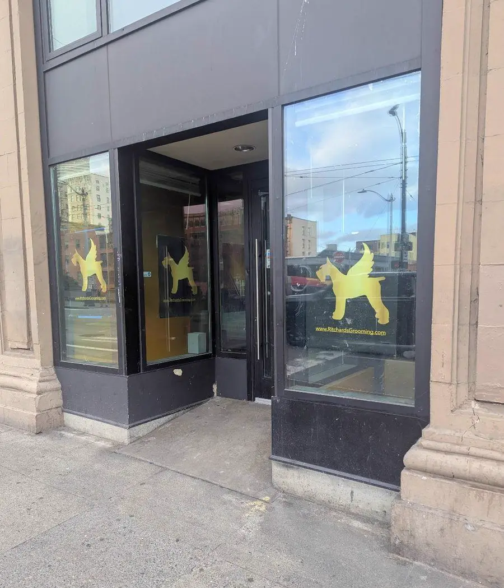

Frequently asked questions.
Everything you need to know before booking, plus directions to the studio.
Do I need an appointment?
Yes, every visit at Sweet Beans Grooming is appointment-only and one dog at a time. There's no walk-in waiting room and no other dogs in the room during your appointment.
What if my dog gets anxious or has had a rough grooming experience?
That's exactly who this is built for. Grooming is performed at your dog's pace, with breaks as needed and a calm, patient approach rather than rushing through a schedule.
How is pricing determined?
Listed prices are starting estimates based on weight, confirmed at drop-off once your dog's coat condition, size, and temperament are seen in person. Bath & Brush starts at $60 (up to $100 for large dogs), Full Groom starts at $100 (up to $140 for large dogs), Puppy Intro is $45, and Paw Trim & Clean is $50. Add-ons like nail trims ($20) and de-matting ($30/30 min) are available with any service.
Is teeth cleaning included?
Yes, teeth cleaning is included with both Bath & Brush and Full Groom appointments. It's also available as a $20 add-on with any other service.
What is the Sweet Bean Paw Care conditioner?
Paw pads are one of the most overlooked parts of dog grooming, exposed to pavement and weather, but rarely cared for. It's a store-bought paw balm applied to moisturize dry, worn pads and help protect them between visits. It's also a small nod to the name: paw pads look a little like beans.
Do dogs need their anal glands expressed at every visit?
Not usually. Most dogs empty their anal glands naturally when they go to the bathroom, so it isn't part of every routine visit. Scooting or excessive licking are signs your dog may need help. Let us know if you notice either. Expressing glands more often than necessary can actually cause irritation, so it's only done when there's a reason to.
Can I clean my dog's ears at home, or should I leave it to a professional?
Light at-home care (wiping the outer ear with a dog-safe cleaner and a cotton ball) is fine for most dogs. Deeper cleaning is best left to a groomer or vet, since cotton swabs and overly deep cleaning risk injuring the ear canal. Dogs with floppy ears or frequent ear issues usually benefit from a quick check at every visit.
Why does my dog's coat mat, and what happens if it's bad?
Matting happens fastest in curly, wavy, or double coats, especially around the ears, armpits, and collar. Regular brushing between visits is the best prevention. Once a mat is tight against the skin, brushing it out can be painful and risks injuring the skin, so a close shave-down is sometimes the safer option. Staying on a consistent grooming schedule is the easiest way to avoid this altogether.
When should I bring my puppy in for their first groom?
Most puppies are ready for an introductory visit around 12–14 weeks old, once they're current on their core vaccines. Early visits are short and gentle: nail trims, a light bath, some tidying, all focused on building comfort with handling and noise rather than a full haircut. Starting early makes every visit afterward easier.
What's your cancellation policy?
Appointments cancelled with less than 24 hours' notice, including no-shows, are subject to a fee equal to 50% of the scheduled service.
Where are you located?
Sweet Beans Grooming operates inside Ritchard's Grooming at 306 4th Ave S, Seattle, WA 98104, right in Pioneer Square, just steps from SoDo and the Pioneer Square Station light rail.
Is there parking?
There's no dedicated lot at the building.
Do you groom doodles or poodle mixes?
Yes. Doodles and poodle mixes have continuously-growing coats that need regular care, typically a Bath & Brush every 3–6 weeks and a Full Groom every 4–6 weeks to prevent matting. We'll talk through the right schedule and finish for your dog's coat at your visit.
How often does your dog actually need grooming?
A quick guide to nail trims, baths, and full grooms, so you're never guessing between visits.
Nail trims: every 4–6 weeks
Active dogs that walk often on pavement may go a bit longer; puppies, seniors, and dogs that mostly walk on grass or carpet usually need them sooner. If you can hear nails clicking on hard floors, they're already overdue.
Bath & Brush vs. Full Groom, by coat type
Frequency comes down to coat type more than breed alone. Here's a general guide based on the dogs we see most often in Seattle:
Every coat is different. We'll confirm the right schedule for your dog at your visit.

Visit the studio
Sweet Beans Grooming operates inside Ritchard's Grooming, in Pioneer Square.
306 4th Ave SSeattle, WA 98104 Open in Google Maps
Ready for your dog's next visit?
Pick a service and a time online. Confirmed pricing happens at drop-off.
Book an Appointment